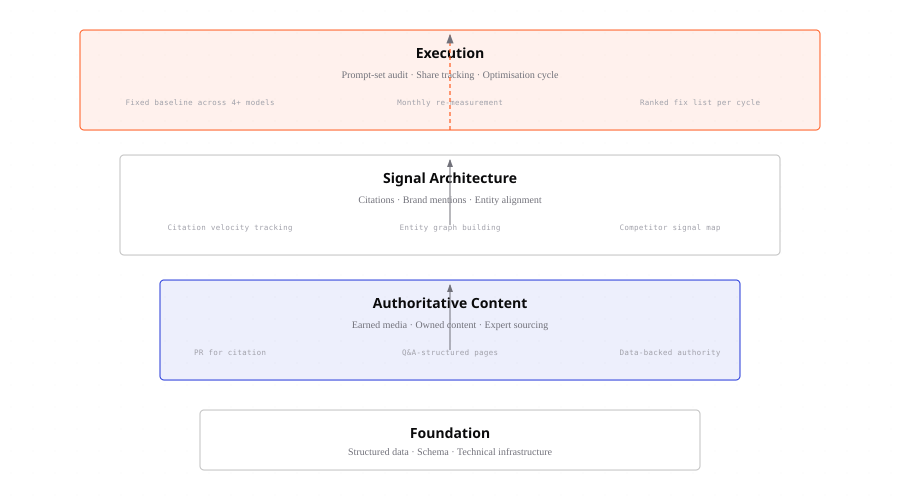
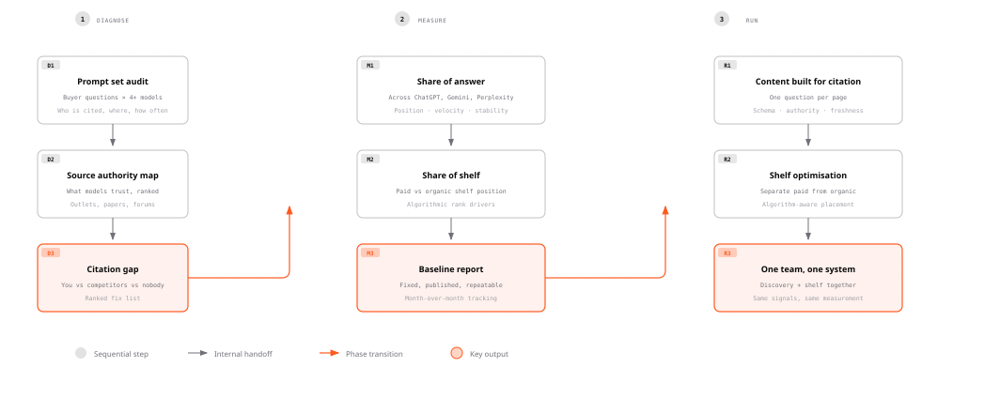

01 / FIND
Search Intelligence
Prompt sets, model coverage, share of answer, competitor presence and citation sources. The baseline tells Inflexion what is happening before we decide what to change.
Search is no longer one results page. People discover, compare and decide through Google, ChatGPT, Perplexity, Gemini, Claude, AI Overviews and shopping assistants. Inflexion connects the intelligence, technical work, content and authority needed to be found across that journey.
Where do you appear? What does the system understand about you? Which independent sources confirm that understanding? Search Intelligence answers the first question. Organic and AI Search Strategy improves the second. Digital PR and citations strengthen the third.

Prompt sets, model coverage, share of answer, competitor presence and citation sources. The baseline tells Inflexion what is happening before we decide what to change.
Technical access, page structure, schema, entities and answer-first content. The system needs to read the page and understand what it represents.
Independent coverage, relevant mentions, research, reviews and useful community sources. The brand needs corroboration beyond its own website.

These systems do not return identical answers. The Search Intelligence baseline keeps the platforms separate before any combined view is created.
Traditional SEO focuses on crawlability, rankings, organic traffic, technical health, content and links. Those foundations still matter.
AI systems generate answers, select sources and describe brands before a visitor reaches a website. Visibility now includes mention, recommendation, citation, source quality and the accuracy of the description.
A ranking report can show where a page sits in a search result. It cannot show whether a brand is absent from an AI answer to the same question.
We track the questions buyers ask, the models that answer them, the brands named, the position of each mention and the sources that support the answer.
Find the gaps before spending budget on the wrong activity.
Make the proposition accessible, legible and useful to search systems.
Build the external evidence that helps systems validate the brand.
Technical search work is not a separate slogan or a checklist added at the end. It determines whether important information is available in the response a crawler receives, whether a system can connect the entities on a page, and whether the content can be retrieved without forcing interaction.
Review robots.txt and server rules so relevant AI crawlers can reach public content without exposing sensitive paths.
Compare the browser view with the raw response. Repair content hidden by client-side rendering, tabs, accordions or delayed loading.
Use structured data and clear relationships to show what a page, product, organisation or claim represents.
Prioritise useful pages, maintain accurate sitemaps and create a clear route to the content models need to interpret.
These figures describe different parts of the system. They do not prove that one activity automatically causes the next commercial outcome. They do show why a single channel view is incomplete.
The practical conclusion is narrower than a promise of guaranteed visibility. Measure the surfaces separately, improve the foundations, and build the external evidence that is relevant to the questions your buyers ask.
The systems overlap in their foundations but not in every signal. Technical access, clear content and entity structure support both. AI search also depends on source authority, retrieval patterns and the way a model assembles an answer. One programme prevents Inflexion from fixing one layer while ignoring the other.
Inflexion defines a buyer prompt set, runs it across the models relevant to your category, and records mentions, recommendations, position, citations, sources and competitor presence. The baseline is fixed and published, so movement has a consistent denominator.
No. The source map identifies the publications, research, forums and data sources models already cite. Inflexion targets useful independent coverage and accurate entity descriptions. Paid or advertorial coverage represents only a small share of the citation data cited on this page.
It can remove an access problem, but it cannot create authority on its own. If the model cannot read the content, technical work is necessary. If the proposition is unclear or independent sources do not corroborate it, technical work is not sufficient.
Technical and content changes depend on crawling and retrieval schedules. Earned coverage may take weeks to appear in model outputs, and single placements rarely move the number alone. Inflexion sets a baseline first, then tracks repeated samples rather than treating one changed answer as proof.
Request an audit across organic search, AI answers, technical access and the sources competitors already own.